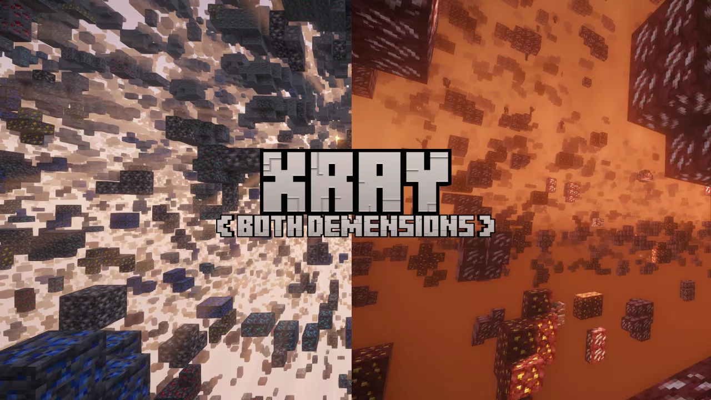

X To Xray
press X, see ores.
A powerful Xray mod for Minecraft that lets you gather resources much faster. Regularly updated, with plugin support and an in-game news feed.
450,000+ downloads on Modrinth

Everything you need to find ores.
One key
Press X to turn Xray on and off instantly.
Configurable
Open the config screen with /config or from the escape menu and adjust how things work.
Plugins
Extend the mod with ready-made plugins or build your own.
News feed
Stay up to date with an in-game news feed.
Many loaders
Available for Fabric, Forge, NeoForge and Quilt.
Both dimensions
See ores in the Overworld and the Nether.

Ready in a minute.
- Install a compatible version of Minecraft.
- Install the Fabric Loader (or another supported loader).
- Download X To Xray for your Minecraft version.
- Download the Fabric API for your Minecraft version.
- Put both files into the
modsfolder of your Minecraft installation. - Launch Minecraft.
Press X.
- Launch Minecraft with the mod installed.
- Create a new world, or join a server that has X To Xray installed on the server side.
- Press X to turn Xray on or off.
- Type
/configor open the escape menu and click the config button to change settings.
Make it yours.
There are a few preconfigured plugins made by RandomPixxel Studios. You can also create your own plugins with the tutorial on GitHub.
Use plugins at your own risk. Community plugins may be unsafe.
Help develop.
Clone the repository on GitHub and change things. When you open a pull request, please describe exactly what you changed and whether you used AI. If you did, tell us specifically what was made by AI.
Not an official Minecraft service. Not approved by or associated with Mojang or Microsoft. Minecraft is a trademark of Mojang AB / Microsoft.